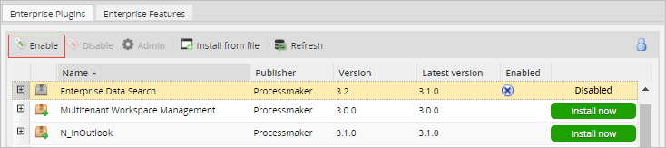
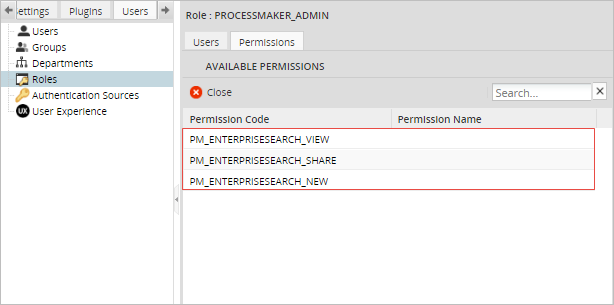
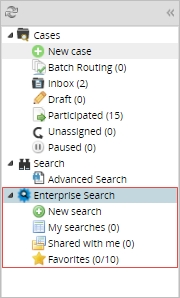
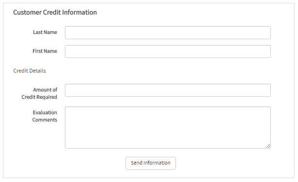
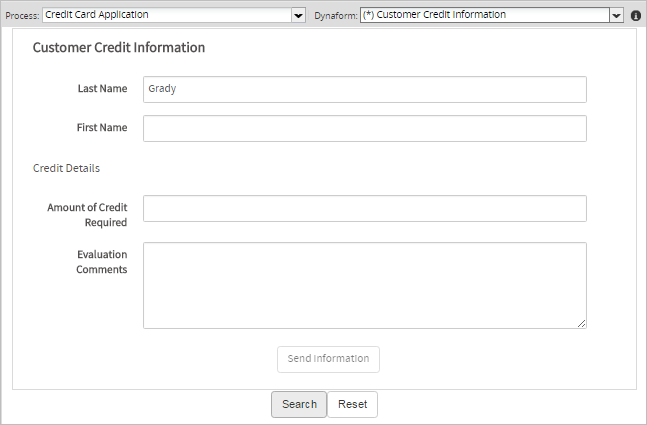
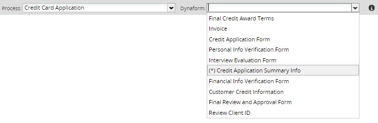
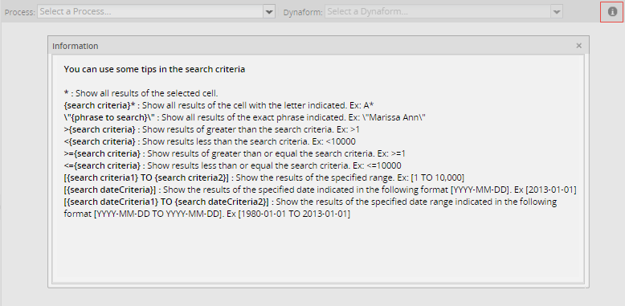
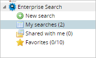
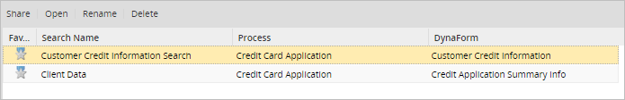
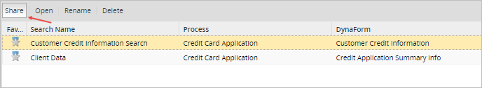

Plugin Version:
3.2.3 |
Release Notes
Plugin Version:
3.2.3 |
Release Notes
Warning: As of ProcessMaker 3.4.X, the feature Enterprise Search plugin is deprecated because ProcessMaker does not support Solr anymore. This plugin will be refactored and improved for future versions of ProcessMaker.
Overview
Enterprise Search is an Enterprise plugin that allows users to search for processes and process elements using search terms located in the Dynaforms defined in each process. The Enterprise Search plugin also helps users conduct different advanced searches based on processes and Dynaforms in those processes. Because this solution is based on SOLR, it will scale to meet the demanding search needs of enterprises with thousands of users. For more information, see Solr Implementation in ProcessMaker.
With this plugin is it possible to:
- Save, rename, delete and share searches between users.
- Continue cases from a search, and if the user has the correct permissions, check the Process Map, Process Information, Task Information, Case History, Messages History, Dynaforms, Uploaded Documents and Generated Documents.
- View information about Output and Input Documents and Messages.
- Add case notes.
- Check the Case Summary.
- Use the Pause, Reassign and Cancel actions.
Requirements
In order to use this plugin, you need the following requirements:
- SOLR Server
ProcessMaker Compatibility
This plugin is fully compatible with the following ProcessMaker versions:
- v. 2.5.2.x
- v. 2.8.0.x
- v. 3.0.1.x
- v. 3.1.x
- v. 3.2.x
- v. 3.3.x
Installation
Log in with a user, such as "admin", who has the PM_SETUPADVANCE permission in his/her role and then go to ADMIN > Plugins > Enterprise Manager. Either install the Enterprise Data Search plugin by clicking on  Install from File and uploading the plugin file, or by clicking on its Install Now button in the list of available plugins.
Install from File and uploading the plugin file, or by clicking on its Install Now button in the list of available plugins.

After installing the plugin, make sure that the Enterprise Data Search plugin is
 enabled.
enabled.

Setting Up Permissions
Once the plugin is enabled, a new role is created automatically.

A set of 3 new permissions are available to be granted to a particular user to allow them access to additional options. Configure the permissions by going to ADMIN > Users > Roles > Permissions, and choosing the new PROCESSMAKER_EnterpriseSearch role, or another role. Click on the Permissions option, then click on Edit permissions and add the permissions: PM_ENTERPRISESEARCH_VIEW, PM_ENTERPRISESEARCH_NEW and PM_ENTERPRISESEARCH_SHARE

Where:
- PM_ENTERPRISESEARCH_VIEW: This permission allows users to view the plugin options available under the HOME tab. The ability to edit a search is also included with this permission.
- PM_ENTERPRISESEARCH_NEW: This permission allows users to create new searches.
- PM_ENTERPRISESEARCH_SHARE: This permission allows users to share different searches with a particular user.
- PM_OPERATOR: When a user with the Operator role shares a search with other users, be sure to include the permissions to view all cases and seach cases in the roles of the other users. Otherwise, the other users might not be able to see the shared cases.
Once the plugin is enabled, the following options will appear in the left menu under the HOME tab in the Enterprise Search section:

- New Search: Create a new search.
- My Searches: All previous searches will be stored in this folder.
- Shared with me: All shared searches will be stored in this folder.
- Favorites: All favorited searches will be stored here.
The options will be explained further later on this page.
Considerations Before Starting
How to Use Search Criteria
- Cases that have special characters in their data, like - [ ] * \, need to have a backslash / symbol after each character to execute the search correctly.
- For numeric fields, it is not possible to search using " * " as search criteria. E.g: 2 * or * 3 only applies to string fields.
- Don't use thousand separators (comma [,]) when searching in currency fields, which only accept decimal separators (point [.]). E.g <122456.229
- In date fields, you must use the complete date format [YYYY-mm-dd]
- It is NOT possible to search in pmtables, external tables, dbconnections or case notes.
- In percentage type fields do not enter the symbol %.
Search Criteria for:
- Text fields need to have the words separated with a space, and must be enclosed in double quotes. e.g “Marissa Ann”.
- Numeric fields must have TO placed in the middle of the range. E.g [1 TO 1000].
- Date fields must have TO placed in the middle of the range. E.g [1980-01-30 TO 1995-10-22].
- Dropdown fields must use the field label to show the correct results.
- Suggest fields must use the field label to show the correct results.
- Yes/No fields must use 1 for Yes and O for No
- Email fields must use double quotes " ". E.g user@info.com
Unsupported Fields
Supported Fields
How to Create a Master Form
A master form is a custom Dynaform that can be created using specific fields from the process. This is useful for when the user needs to have only specific fields from that custom Dynaform shown inside the Summary option. Basically, the user can create their own Dynaform and select which fields will be visible in the search. It reuses the Case Summary concept.
The user can create a Dynaform using the same variables from other Dynaforms created in the process. In this example, a Dynaform named "Customer Credit Information" has been created, and has the following fields: Customer First Name Name and Customer Last Name, which were extracted from another Dynaform, and the Evaluation Comments and Amount of Credit Required fields, which were also extracted from another Dynaform. This Dynaform will look like:

To assign this Dynaform as a Case Summary, open the process and right click on the Process Map, then click on Edit Process and select the Dynaform just created in the Dynaform to show a case summary dropdown menu.

The Dynaform selected as Case Summary will be listed with an asterisk * before its name in the search results.

It means that the Dynaform has been defined as a master Dynaform. Select it and the master Dynaform will be displayed to do the corresponding search:

Once the parameters of the search are set, click on Search to list the results.

Select one of the results, click on the Summary icon and go to More information. The custom Dynaform with the information filled will be displayed:

Creating a New Search
As mentioned before, searches are based on information filled in by users while running processes, and those searches can be performed by selecting the process and then its corresponding Dynaform.
To create a new search, go to the HOME tab and then click on the New Search option. The processes created in the current workspace will appear with their corresponding Dynaforms :

Where:
- Process: Select a process from the list provided. Once a process is selected, the Dynaform field will be enabled.
- Dynaform: Select a Dynaform from the list of Dynaforms in the process selected previously.
For instance, if the Credit Card Application process is selected, all its corresponding Dynaforms will be displayed:

If a Dynaform is listed with an asterisk (*) beside its name, it has been defined as a master form, and therefore it is possible to do a custom search using the fields in the form.
Once the process and Dynaform have been selected, the Dynaform will be displayed as follows:

If the user wants to search using the name of an employee, enter his/her name and last name and click the Search button. Cases where the employee has participed in will be displayed in the list. If no search criteria is entered, all the cases of the process will be listed.

To edit the search, click on Edit Search and the Dynaform will be displayed, where the user can edit the search parameters. Click on the Reset button to reset all the Dynaform fields and enter new values.
How to Use Search Criteria?
In the upper right corner, there is an Information icon that explains how to use the search criteria. Click on this button and a popup with search criteria tips will automatically open:

Search Criteria Examples
The following table shows examples of possible search criteria to obtain a specific result.
Search criteria for Text fields
| Result | 1st Search | 2nd Search | 3rd Search | 4th search |
|---|---|---|---|---|
| Enterprise Edition | Ent* | E*t | *tion | \”enterprise edition\” |
| test@gmail.com | test@gm* | test@gmail.com | *.com | tes*com |
Search criteria for Currency fields
For currency fields use: <, >, <=, >=.
| Result | 1st Search | 2nd Search | 3rd Search | 4th search |
|---|---|---|---|---|
| 122455 | |<122456.229 | >=123454.334 | <=123456300 | [122456 TO 124456] |
Search criteria for Date fields
For date fields, the search criteria must follow the [YYYY-mm-dd] or [YYYY-mm-dd TO YYYY-mm-dd] format.
| Result | Search Criteria |
|---|---|
| 2012-05-02 | [2012-05-02] |
| 2012-05-02, 2012-10-02 | [2012-05-02 TO 2012-10-02] |
Saving Searches
It is possible to save searches, which helps when the same search is done frequently. Once the search defined, click on Save Search on the right side of the interface. A windows will be displayed:

Give the search a name; it is recommended to name your searches based on the results obtained. Consider the following points:
- A name is required.
- It is not possible to use HTML tags.
- Searches are saved by user.
- When a search is saved, all filters defined in the Dynaform will be saved too.
Saved searches will be stored inside the My searches option:

Editing Searches
If a search needs to be edited, the user can click on the Edit Search button and the Dynaform will be displayed where the criteria can be edited.
Changing Views
Changing the view of the search results shows users different information about the cases found. To change views, click on the Change View option on the upper right side:

When Change View is selected, the Dynaform will be displayed with different options numbered as in the image below:

- 1. Navigation Bar: Allows the user to navigate between pages based on the total number of results found. Use the arrows > < to navigate between results
- 2. Open: It is possible to continue a case by selecting it from the results. Click on Open and the case will open displaying the information filled in previously. Click on the Submit button, and the case will routed to the next instance as if the user were working from the Cases list. If the user doing the search is not assigned to the task, only the case properties will be displayed.

- 3. Summary: By clicking on Summary, users can see the Summary of the search results, where general information about the case is displayed. It re-uses the same concept as the ProcessMaker Summary. Available tabs: General Information, More Information, Uploaded Documents, Generated Documents.

- 4. Cases Notes: Case notes can also be added to cases from the search results. For instance, if the search was required for a user's supervisor, once the search is done the supervisor can be notified of the search results by adding a case note. Remember that it is only possible to add plain text and certain variables to the note. The search results must be added to the case note manually.
- 5. Change view: Redirects the user to the preview view, where the list of search results is displayed.
- 6. Save: Saves your current search.
- 7. Edit search: Allows the user to edit the current search.
My Searches
It shows a list of all saved searches. There is no limit to the number of searches that can be saved.

Click on a search to enable the buttons in the top menu (Share, Open, Rename, and Delete).

This option shares a search with another user or group inside ProcessMaker. Click on the Share button:

The Share window will be displayed:

On the left side, either Groups or Users can be selected, while on the right side the user can select the type of permission to give to that particular group or user. To assign permissions, select the user or group that will have access to the search results, then select the permission and click on the Add button. It is possible to assign permissions to multiple groups or users at once:

There are two types of permissions available:
- View: Allows the users to view the search results, but not to edit the results or case information. In the example above, the user "Heather" has been assigned the View permission. If we log in to ProcessMaker with that user, the following view will be displayed:

To open the search, click on the Open button. In the search results, as the user will only have the option to view the results, and the Edit option will be disabled.

When opening a case, if the user doesn't have the correct permissions, or hasn't participated in the case, the following message will appear:

- Edit: Gives users permission to edit searches. Using the example above, the user "Harry" has been assigned the Edit permission. If we log in to ProcessMaker as that user, the following view will be displayed:

When the search results are opened, the Edit option will be enabled.
All searches shared with the user logged in will be listed in this section:

Depending on the permissions set for that particular user, information about the search can be seen.
Favorites
Searches can be saved as favorites, which is useful for keeping search results for future reference.
To set a search as a favorite, click on the Star icon. The star will turn yellow, which means that the search was favorited successfully.

To remove a search from the favorites, click on the Star icon. The star will turn grey, meaning that the search is no longer in the user's favorites.
All searches saved as favorites will be stored under the Favorites option. Keep in mind that only a maximum of 10 searches can be set as favorites.